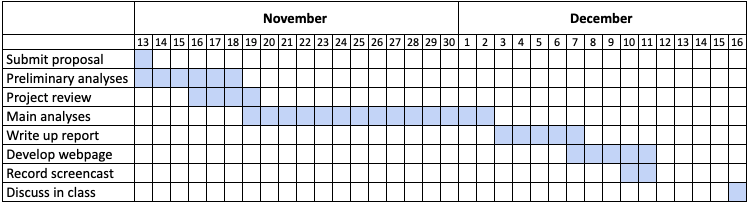

Variation in kidney transplantation center practices and patient characteristics
Kidney transplantation is the preferred treatment for End Stage Kidney Disease (ESKD). Nonetheless, due to a severe donor organ shortage, only 22,393 out of more than 785,000 patients with ESKD received kidney transplants in the United States (US) in 2018.1 Given the limited supply, kidney transplant centers can be very selective in who qualifies as a kidney transplant candidate. Transplant centers and surgeons often make subjective decisions regarding which deceased donor kidneys are acceptable for transplant in a given patient. This process can lack transparency and impact whether a patient receives a kidney transplant prior to dying or removal from the waiting list due to severity of illness. Accordingly, large practice variation is possible among the 200+ kidney transplant centers across the US. While center-level summary data on transplants and waitlist candidates are publicly available, this information is primarily presented as individualized snapshot reports that do not lend themselves to direct comparison across sites over time. Given that patients may choose where to waitlist, our aim is to analyze data comparing transplantation center practices and develop a dashboard to present these findings to the public.
We will produce a written report and a webpage with a dashboard that presents data visualizations comparing kidney transplantation centers and examining organ offer practices over time.
The Scientific Registry of Transplant Recipients (SRTR) takes national registry data on all organ donors, transplant candidates, and transplant recipients in the US to produce biannual Program-Specific Reports (PSR). Our project will utilize center-level data on waitlisted patients and patients in receipt of transplants, aggregated demographics, transplant outcomes, and organ offer acceptance practices. The PSR data is archived and publicly available for download in Excel format from the SRTR website with drop-down menus for organ and time period. These reports date back to July 2012 with offer acceptance data available starting July 2017. There are 238 rows of transplant center data in the most recent data file, organized across many different sheets by topic, each with tens to hundreds of columns. We may also scrape “current rating” information about transplant programs that is only available on the web, including ratings (scale from 1 to 5) of 1-year kidney survival and chances of getting a deceased donor transplant faster.
